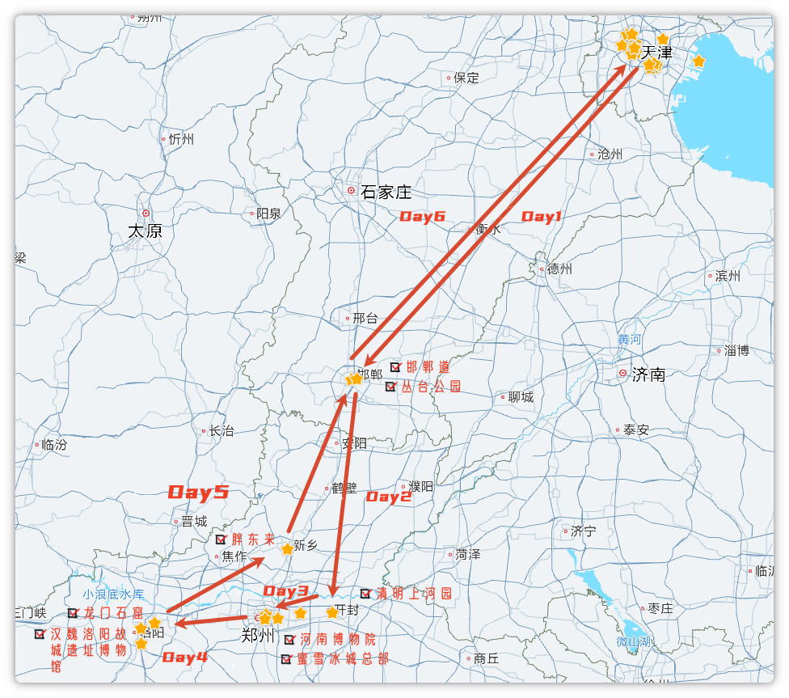

开封郑州洛阳五日：一路向西的古都短途
配图放 assets/。正文已定稿，地图和现场照待补。
一、开场
这次印象最深的是清明上河园的夜灯。孩子四岁，全程跟下来最喜欢的居然不是园子，也不是石窟本身，是龙门门口的水幕。
2026 年 6 月 9 到 14 号，一家三口自驾，计划五日：邯郸过夜，再串开封、郑州、洛阳，返程顺路新乡胖东来。走下来一路都满意、都值得去；只是 D5 时间来不及、又怕开夜路，中途在邯郸多停了一晚，变成六天回家。
一路向西，古都连着古都。如果只记一个点，就是清明上河园。
二、这篇适合谁
适合想一次看几个河南点、能接受每天挪地方的人。五天里几乎天天换城，开封玩两天，郑州洛阳各过一晚，返程还要绕新乡。
不太适合两种人：一种是只想深耕一座城、把开封或洛阳吃透；一种是讨厌开车赶路——这次就是靠自驾串起来的。
真实节奏稍微有点赶，整体能接受。不是特种兵刷景，也不是躺平；最紧的是最后一天，怕夜路，才多住了一晚。
三、总览：我们实际怎么走的
| 天 | 计划 | 实际 | 一句话评价 |
|---|---|---|---|
| D1 | 天津 → 邯郸（夜景早睡） | 晚到酒店，没出去 | 纯赶路，夜景直接砍 |
| D2 | 丛台公园 → 开封 · 清明上河园 | 丛台遛娃 + 邯郸道买文创 → 清园（东京梦华 + 夜景） | 最值的一天，热，孩子也看得住 |
| D3 | 开封补玩 → 郑州 | 岳飞枪挑小梁王 + NPC 赚银票 → 郑州 | 互动好玩，表演要早占位 |
| D4 | 河南博物院 + 蜜雪总部 → 洛阳龙门 | 博物院 + 蜜雪 → 龙门亮灯（跟团官方讲解） | 龙门好看也好拍，台阶多，带娃累 |
| D5 | 白马寺 → 新乡胖东来 → 天津 | 汉魏洛阳故城遗址博物馆 → 胖东来 → 邯郸过夜 | 白马寺砍了，胖东来车位紧，赶不回家 |
| D6 | （无） | 邯郸 → 天津 | 临时加的赶路日 |
总结：
实际路线：天津 → 邯郸 → 开封两天 → 郑州一夜 → 洛阳龙门 → 新乡胖东来 → 邯郸再住一晚 → 回天津。
最值的是清明上河园那两天，夜灯和东京梦华是整趟高潮。
最累的是龙门石窟：台阶多、地面不适合推车，带孩子爬上爬下。
若重来，会给洛阳多留时间——龙门亮灯照去，洛邑古城、白马寺这次都没排上，行程还临时改了。
四、地图总览
全程向西再折返：天津 — 邯郸 — 开封 — 郑州 — 洛阳 — 新乡 — 邯郸 — 天津。
核心点：清明上河园、河南博物院、蜜雪总部、龙门石窟、汉魏洛阳故城遗址博物馆、胖东来。

五、分日回顾
D1 赶路到邯郸
下午从天津出发，到如家 neo 东站店已经很晚，没再出去。计划里的邯郸道 / 学步桥夜景，直接砍了。
这天没有「最推荐」，就是把路开完、早点睡。高层房间电梯慢，好在酒店门口能停车。
晚饭在酒店附近面馆，拌米线挺好吃，赶路日吃这个满意。

D2 开封 · 清明上河园
早上孩子在丛台公园玩，不晒，适合遛娃；我去旁边邯郸道历史文化街区逛了一圈，买了点文创。中午前出发，下午进清明上河园，晚上看了《大宋·东京梦华》，再看夜灯。
最推荐东京梦华——孩子看得很认真，并没有不耐烦，体验很好。夜景也漂亮。天气有点热，园内人多，出来比较堵。
两天晚饭都在清园里吃小吃，满意。当晚住锦江之星金明广场店：住得还行，停车位太少，前台人少忙不过来，一直在等。

D3 开封收尾 → 郑州
继续泡在清明上河园。这天主线是和各个 NPC 互动、赚银票；另外看了「岳飞枪挑小梁王」。
最推荐把赚银票当正事玩——比走马观花逛园有意思。坑是表演：岳飞枪挑小梁王要早点去，否则位置不好。
天黑前开到郑州，住如家 neo 二七大卫城店。附近有商场，吃饭方便；停车位同样少。晚饭在商家里吃了小火锅，另去了小 V 家火锅鸡，都满意。

D4 郑州博物 + 蜜雪 → 洛阳龙门
上午河南博物院，中午蜜雪冰城总部打个卡，午饭后开去洛阳，下午加傍晚逛龙门，等到亮灯。讲解是和其他游客一起约的官方场。
博物院印象不深，存在感偏弱。还能想起的一个点：孩子问为什么展台里有个人，走近一看是金缕玉衣。龙门才是这天的高潮——亮灯好看好拍，体验感比莫高窟好太多。（对，莫高窟给我的印象太差，时不时就拉踩一下）
最推荐龙门亮灯。坑也在龙门：台阶多、地面不适合推车，带孩子爬上爬下还是有点累。孩子最喜欢的反而是门口的水幕。
洛阳没怎么吃到美食。住如家精选洛邑古城店，送了小扇子；车要停附近停车场，酒店有小摆渡车接送。洛邑古城本身没来得及逛。

D5 故城博物馆 → 胖东来 → 邯郸
白马寺临时改成汉魏洛阳故城遗址博物馆，就在白马寺旁边。人很少，体验中等；时间不够的话可以去掉。洛阳过去有一段乡间小路，导航要留意。
之后北上新乡胖东来。出发前就查过会很堵，车停在对角的停车场，车位还是紧张。自营买了不少：洗脸巾、洗衣凝珠、湿巾，也买了包装食品带走。商场里现吃的小吃一般。非自驾的话，要提前想东西怎么拿。
原计划当天开回天津，时间不够、又怕夜路，改在邯郸再住一晚。住的是如家商旅开发区火车东站：服务一般，后来发现遗落了东西，酒店也没主动通知。
D6 邯郸 → 回家
纯赶路。五日计划多出来的一天，就为了不当晚开夜路。
六、安利与避雷
必去 Top 3
- 1. 清明上河园——两天都没玩腻。东京梦华孩子看得住，夜灯是整趟最亮的画面；第二天跟 NPC 赚银票，比只逛景有意思。
- 2. 胖东来——自营货值得装一车（洗脸巾、凝珠、湿巾这些）。自驾去才比较合理；提前会查到很堵，对角停车场能停，车位照样紧。非自驾要想好怎么把东西带走。
- 3. 龙门石窟——亮灯好看好拍，体验比莫高窟松快。台阶多、不宜推车，带娃要预留体力和时间。门口水幕别急着过。
可去可不去
- • 丛台公园：不晒，遛娃可以；不为它专程停，邯郸早上顺路再去。
- • 河南博物院：能去就去，别当行程高潮。我们印象不深，金缕玉衣是孩子问出来的。
- • 蜜雪总部：打卡即可，半小时够，别排成半天。
- • 汉魏洛阳故城遗址博物馆：人少、安静，体验中等；时间紧就砍，别用它硬换白马寺还觉得亏。
强烈不建议 / 可砍
- • 邯郸夜景：我们 D1 晚到直接没去，不后悔。真要看，别跟长途赶路叠同一晚。
- • 洛阳只留一晚：龙门亮灯值得等，问题是时间不够。洛邑古城、白马寺这次都没去成，古都味道会薄。
对照计划：哪些注意事项事后证明很准
- • 清明上河园赚银票可以提前查攻略，否则第二天会有点懵。
- • 胖东来必买清单可以先看好，现场又堵又想买，容易乱装。停车也是：提前查了会堵，别指望店门口，对角停车场能停，车位照样紧。
- • D5 当天洛阳 → 胖东来 → 天津，时间账很紧；怕夜路就老实拆成两天，别硬撑。
哪些其实过虑了
- • 四岁孩子会不会在园子里、在东京梦华坐不住：实际很认真，没有不耐烦。
- • 自驾连开几天会不会很累：两人换开，高速靠辅助驾驶，总体不累；累的是景区里走路，不是方向盘。
- • 龙门会不会像莫高窟那样看得憋屈：亮灯之后反而更轻松，也更好拍。
总结：
若只问必去：清明上河园玩透，龙门等亮灯，返程给胖东来留停车和购物时间。
丛台、博物院、蜜雪、故城博物馆有空再去；邯郸夜景和「一天内从洛阳开回家」可以砍。
计划里最该听的是：清园先做功课、胖东来先列必买、最后一天别排满。
最不用慌的是：带娃看演出、连续自驾——这两样我们都想得太严重。
七、吃住行实测
住
| 酒店 | 位置 | 睡眠 | 复住 | 一句话 |
|---|---|---|---|---|
| 如家 neo 邯郸东站店 | 门口能停车 | 还行 | 一般 | 赶路过夜够用，高层电梯慢 |
| 锦江之星金明广场店（开封） | 去清园方便 | 还行 | 一般 | 住得可以，车位少、前台慢 |
| 如家 neo 二七大卫城店（郑州） | 挨着商场 | 还行 | 愿意 | 吃饭方便，停车位少 |
| 如家精选洛邑古城店（洛阳） | 古城旁，车停附近停车场 | 还行 | 愿意 | 送小扇子，有摆渡车；古城本身没逛成 |
| 如家商旅开发区火车东站（邯郸，返程加住） | 东站附近 | 一般 | 不愿意 | 服务一般，遗落东西没主动通知 |
总结：
开封、郑州、洛阳这三晚都够用，槽点集中在停车和前台。 郑州挨着商场最省心，洛阳摆渡车。 返程那晚邯郸商旅不推荐，临时落脚可以，别指望服务。
吃
邯郸
- • 酒店附近面馆拌米线：赶路日吃这个，满意
开封
- • 清园内小吃（两天都在园里解决）：方便，满意。
郑州
- • 大卫城商家内小火锅：住店旁，省事
- • 小 V 家火锅鸡：满意
洛阳
- • 没怎么找美食吃
新乡
- • 胖东来商场里的小吃：一般；来这儿主要是买自营，不是冲着店里现吃
总结：
开封两天靠园内小吃就能过；郑州商场和小 V 家火锅鸡是这趟吃得最稳的一晚。
洛阳几乎空白，胖东来商场里的小吃不用专门留胃。
行
- • 全程自驾： 两人换开，高速靠辅助驾驶，方向盘总体不累。累的是每天换城的节奏，不是车本身。
- • 清园： 人多，比较堵，进出预留时间。
- • 洛阳 → 汉魏故城遗址博物馆： 有一段乡间小路，导航别跟着瞎钻，留意路况。
- • 胖东来： 提前查了会很堵，停对角停车场，车位还是紧。是这趟停车最费神的一站。
- • D5 返程： 洛阳出发再买再开回天津，一天不够。我们拆成邯郸过夜 + D6 回家，比硬开夜路合适。
- • 哪段最省心： 开封连住两晚，不用天天搬行李；最虐的是龙门带娃爬台阶，其次是胖东来停车。
总结：
自驾能串起来，换开 + 辅助驾驶就不累。
真正要预留的是：清园拥堵、龙门台阶、胖东来车位、最后一天的时间账。
乡间小路只出现在洛阳去故城博物馆那一段，走的话看一眼导航。
八、收尾：写给下一个去的人
如果只去一个地方，我会留开封。清明上河园两天都值得，夜灯和东京梦华够撑起一趟短途。
如果重来，我会改洛阳：龙门亮灯值得等，缺的是时间。洛邑古城、白马寺都没排上，早上又临时拿故城博物馆顶了白马寺。洛阳是几朝古都，很适合凭吊怀古，这次计划没留够，可惜了。
真心话：时间很赶。一路都满意、都值得去，但想充分体验，还是要再拉长一些——尤其是洛阳，别再当成「龙门 + 第二天早上走人」。
路线、吃住有疑问直接问，能想起来的我都回。